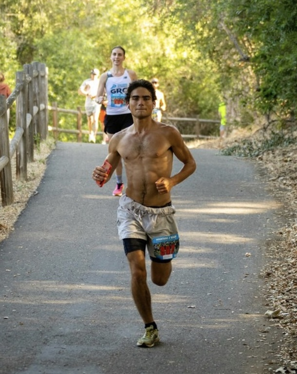
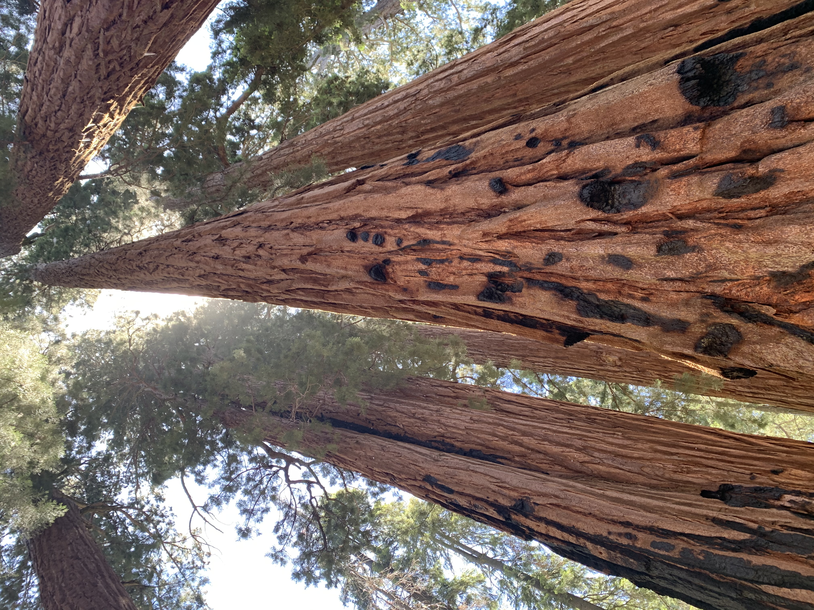
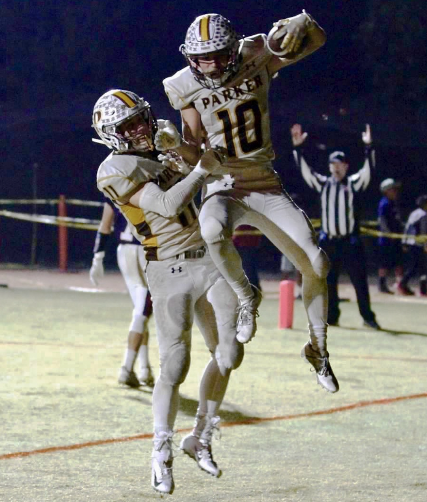
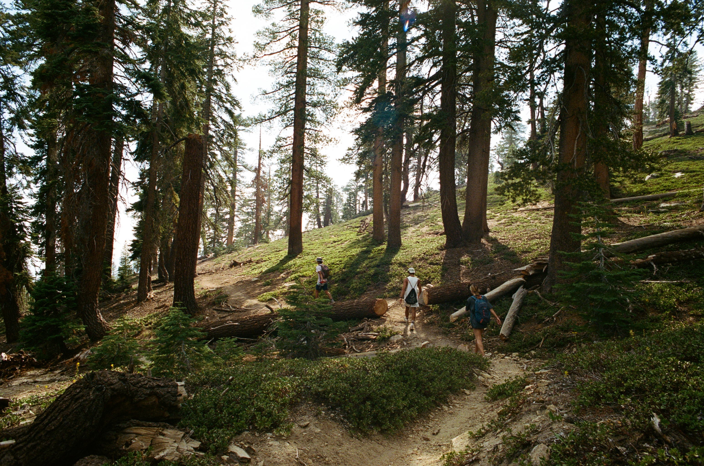

Trevor Brokowski
I am a senior at the University of California, Los Angeles Honors College studying Computational and Systems Biology with a custom concentration in Quantum Machine Learning for Genetic Engineering. I am an aspiring PhD student looking to study Biomedical Informatics and Computational Biology. I want to focus on harmonizing and integrating multimodal data- electronic health records, omic, and imaging - with social determinants of health for more accurate and equitable precision care models. Then, I want to form active collaborations with practicing clinicians to help develop models that can and will be integrated into clinical workflows to aid clincial decision making.
Research and Experience
My experiences in research and internships have given me a versatile skillset with which I am able to creatively frame interdisciplinary hypotheses into executable problems and then the technical prowess needed to deliver meaningful results. Fueled by my belief that anything is possible and my unyielding work ethic, I strive for brilliance in innovating cutting-edge and creative methodologies and have the grit needed to remain ambitious in the face of uncertainty. Moreover, I recognize the vitality of teamwork and strive to promote inclusivity, improving the work of myself and those around me. The descriptions below provide an in-depth explanation of the problem addressed, my method, and the outcome. If you desire a more succint explanation of my accomplishments, please view my resume .
Context:
In accordance with Agile best practices, a team will "commit" to certain amount of points at the beginning of each 10 week work period. The committed point value represents the deliverables the team predicts they can present to invested stakeholders at the end of the period. However, the actual amount delivered is often different than the commited value. If the delivered value falls short of the commited value, the team failed to deliver all of the work they promised, negatively impacting confidence in the team and the company. Thus, the ability to accurately forecast the probability of delivering on a commitment is of extreme value.Methods:
At the start of my internship, I was asked to see if this prediction was possible. To explore this idea, I contacted countless individuals to track down the database tables that would contain relevant predictors, utilized ETL methodologies to extract and clean the data, and then performed an iterative process of EDA and model training/testing. Once I had constructed a model that was able to accuratly predict the probability of commitment delivery, I expanded on the initial idea and constructed a deep learning model that more accurately predicted the actual amount delivered at the end of the period.Results
By the end of my internship I had constructed two deep learning models capable of predicting the probability of delivery and a more accurate projection of actual delivery. If this model had been used at the start of 2021, the company would have better allocated 1.5 million dollars worth of time in salary ~ 1 year better allocation of work for a 7 person team. Then, while evaluating the coefficients of my model, I determined that teams who have the highest predictability and best deliverability follow agile best practices. Thus, my work used data driven methodologies to verify the existence of the agile team at WWT. The culmination of my intern project was the deployment of my two deep learning models to production, a dashboard that allowed the easy interpretation of my insights, and a presentation to the VP and President of IT at World Wide Technology. In the end, it was the deployment, implementation, and dashboard that will provide the most benefit from my summer work. It is imperative that the models we construct do not stay isolated on jupyter notebooks but that we deliver them to stakeholders in a manner that supports their decision making processes.
Context:
One of the most promising applications for quantum computers is the simulation of chemical and biological systems. This is because as quantum systems scale in size and gain degrees of freedom, they become exponentially more difficult to simulate using classic devices. Whereas by utilizing quantum mechanical properties, quantum computers can simultaneously compute multiple states at once which permits the simulation of these systems as they scale in size. Prior research has theoretically demonstrated that quantum devices can efficiently simulate larger systems which will advance the understanding of the quantum dynamics that modulate molecular systems and aid in various tasks such as predicting reaction rates, equilibrium geometries, and transition states.Methods
Here, I proposed a novel method using Quantum Machine Learning to simulate a toy quantum system comprising two electrons and one nuclear interaction under the influence of varying magnetic field angles of incidence to explore the phenomena of spin dependent chemical reactions. This system, known as the radical pair mechanism, allows us to use the Lindblad Master equation to first solve for the final states of the system on a classic device, and then use quantum machine learning to learn how to map the system onto a quantum computer. Using a variational quantum algorithm, I construct an ansatz that consists of the electronic reactions that effect the system, and then optimize the parameters of the circuit until the final singlet yield matches the classically simulated singlet yield.Results:
The results of my simulation demonstrate that the ansatz and procedure I had constructed is able to capture the final singlet state of the toy radical pair system. Although this is a toy system, this theoretical experiment demonstrates that we can simulate molecular systems on quantum devices using quantum machine learning techniques, and further research will attempt to scale this technique to simulate larger and more biologically relevant molecular systems. I have had the opportunity of presenting my research at the "IEEE International Conference for Quantum Computing" where I was one of 2 undergraduate posters selected out of 300 applicants, and I have also presented at the "Big Quantum Biology Meeting" organized by UCLA and the University of Surrey.
Context:
Lab Automation has accelerated scientific research and allowed for more reliable and precise data. Many lab automation processes are either hosted within a single machine that automates a series of assays or require devices made from the same company, however, Biosero provides device agnostic lab automation and scheduling where you can create workflows that utilize multiple devices and then schedule assays to run until completion. Using robotic arms and lab assistant robots, well-plates are able to be transferred from device to device without human intervention, allowing scientists to do science instead of manually carrying out their experiments. However, one issue within lab automation is the fault with picking and placing well-plates by robotic arms. Occasionally, the robotic arm will not place the well-plate exactly flush on the plate holder, causing the failure of the automated assay and potentially ruining thousands of dollars worth of samples. The solution is to have a human pick up the plate, move it a few centimeters onto the plate holder and then press continue.Methods:
To start, the way I got the internship was a little unorthodox, which allowed them to take a chance and allow me to work on a sizeable but potentially unfeasible project. Desiring a summer internship in biotech, I cold emailed over 50 leading biotech companies across southern california asking for an internship. After interviewing, I ended up as a deep learning intern at Biosero. I was the only full-time summer employee who had any prior knowledge in deep learning, albeit mine was very surface-level. Nonetheless, after meeting with the CTO, he mentioned the issue with picking and placing well plates, and I was determined to develop a solution. This was a computer vision problem, yet I hadn't had any experience with computer vision, so I spent the first couple weeks attempting to understand all of the methodolgies and how to apply them to my problem. Over the course of the next month, I felt like goldilocks. Some of the solutions were accurate but not fast, fast and accurate but not robust to a lab enviornment. I had to embrace failure as learning, and re-frame my mindset. Instead of having no successes I had simply learned new computer vision techniques that did not suit my problem. Given the freedom, and scariness, of no oversight I had the opportunity to become skilled in a wide range of deep learning and computer vision methodologies. It forced me to grow as a scientists and develop solutions by thinking on my own. One day, when I was getting close to giving up, I found a paper from an MIT professor about his work in computer vision and picking and placing. It was very similar to my work and at that moment I realized that if its posisble for anyone to do it, its possible for me to do it. Finally, by the end of the summer I had developed a patent pending methology to identify plates in a robust lab enviorment and then I improved upon the initial ask and was actually able to correct the plates themselves.Results:
My final system performed image to image prediction by leveraging fully convolutional networks and deeply connected nets which identified the plates through robust edge and boundary detection. If the plate was deemed out of place, a RGBD camera would identify the 3-d location and then correct the position. A video of the final system is available below. Please note that the qr code was used for hand eye calibration with the robotic arm and not to locate the plate itself. Then, the challenge came with the implementation of the identification system with the robotic arms. I worked collaboratively with members of the engineering team to calibrate the arms with the vision system, build devices to positiion the camera, and then finally deploy the computer vision software to the biosero laboratory workflow platform.
Context:
It is accepted that the coloration of bird feathers and fish scales have ecological and behavioral functions that evolved through process of natural selection. The understanding of the geo-origination of colors, comparative analyses for color in different species, and other insights into coloration would grant insights into evolution of birds and fish on earth. However, one of the issues that evolutionary biologists encounter is the identification of colors. One person's blue might be another's gray. Hence - color is highly subjective.Methods and Results:
This research project developed an r-package aiding in high throughput analyses of birds and fish through discrete color identification, allowing the standardization of color. My first contribution to this project accelerated the image processing pipeline from analyzing 24 images in 3 hours to 7 minutes. Taking advantage of R's vector based calculations, I vectorized all of the color calculation mechanisms in the software which drastically improved computation time. My next major contibution was a function that attempted to quantify the biological significance of inididual color spots or small patterns. The original software output colors that had a total prevalence above a set threshold. So, if there was a white bird with a significant small red spot, the software would miss that red spot. My function used a dynamic method to calculate the clustering frequency of the colors in the image to solve this issue.
Context:
As my first reasearch experience, I assisted in Dr. Farhad B. Imam's lab at the Institute for Genomic Medicine at the University of California, San Diego where the research goal was to develop a novel vertabrate model for hypoxic preconditioning. The scope of the research aimed to identify and study genes that protect key organs like the brain from low oxegynic stress enviornments. Severe hypoxia is a common cause of major brain, heart, and kidney injury in adults, children, and newborns however mild hypoxia can be protective against the former.Methods and Results:
I contributed to this research by performing RNA extraction, labeling, and hybridation using an embryonic zebrafish model to study hypoxic function. In totality, I helped to identify over 3000 differentially expressed transcripts that appeared in the prescence of hypoxic conditions, as well as the identification and validation of five novel hypoxia-protected genes which were previously implicated in metabolic regulation.Manuscripts and Presentations
Manuscripts
Brokowski Trevor J, Chiang N. Jeffrey. Machine Learning for Antibiotic Stewardship in the Treatment of Stapholycoccus Bacterial Infections. medRxiv 2022.11.28.22282797; doi: https://doi.org/10.1101/2022.11.28.22282797
T. J. Brokowski, F. T. Chowdhury, L. D. Smith, P. Alvarez, S. Sandeep and C. Aiello, "Spin Chemistry Simulation via Hybrid-Quantum Machine Learning," 2022 IEEE International Conference on Quantum Computing and Engineering (QCE), 2022, pp. 867-868, doi: 10.1109/QCE53715.2022.00147.
Presentations
Simulating Spin Chemistry Systems using Hybrid-Quantum Machine Learning. Trevor Brokowski, Clarice Aiello (Univ. of California Los Angeles), Farhan Tanvir Chowdhury, Luke Daniel Smith (Univ. of Exeter), Samarth Sandeep (If and Only If (Iff) Technologies) and Pedro Alvarez (Universidade Estadual de Campinas)Presented at: IEEE International Conference on Quantum Computing and Engineering; 2022 Sept 18-23, Broomfield Colorado
A Variational Approach to Electronic Hamiltonian Simulation. Trevor Brokowski, Farhan Chowdhury, Luke Smith. Presented at: Big Quantum Biology Meeting; 2022 Feb. 14, online.
Determining bird colors from digital images for high-throughput analyses of color evolution Whitney L. E. Tsai, Shawn T. Schwartz, Elizabeth A. Karan, Mark S. Juhn, Mackenzie Perillo, Trevor Brokowski, Allison J. Shultz, Thomas B. Smith, and Michael E. Alfaro. Presented at: American Ornithology Society, Ornithological Conference. 2021 Aug. 9, online.
Classes
Skills
Hobbies
Here are some things I like doing when I'm not working!

This picture was taken at the Ohai to Ventura Mountains to Beach marathon - my first marathon ever. 4 months prior, when I signed up for the race, I had the lofty goal of qualifying for the Boston marathon. To qualify, I would need to run a marathon in under 3 hours. For context, qualifying for the Boston marathon is one of the pinnacle achievements in amateur sports as the qualifying times ensure that only the top 99 percentile of marathoners in each age group will qualify. After months of consistent and rigourous training, race day had arrived, and let me tell you, running a marathon is an excruciating but incredibly addicting ordeal. Upon mile 20, I hit the wall and I didn't think that I could go on. Falling back on my training, I was able to perseve. This is what I had worked for. No one else was deserved or was capable of experiencing my pain, so I needed to enjoy it and finish the race. Unbeknowst to me at the time, this marathon had a hiccup. The course was extended by 0.4 miles, and so instead of running 26.2 miles, everyone had to run 26.6 miles. This caused me to have an adjusted time of 3:00:01. I missed the qualifying time by one second because of the extra 0.4 miles that I had to run. Simply put, I was devasted. It was heartbreaking to miss my goal due to an uncontrollable external factor. Many others wanted to sue the race or blame and complain. I got back in the lab. I just needed to work harder such that no uncontrollable external factor would get in my way. I am running the same race in May 2023, and I am going to win. This time, nothing is going to keep me from my goal.

There is nothing as serene as getting outside and exploring the great out doors. I have been blessed with the ability to visit 8/9 National Parks in California and, in total, 21 National Parks across the country. My favorite is sequoia. Being from southern california, one of my favorite things to do is drive out to the desert in the afternoon, spend the night hiking around and exploring the vast empty space of the desert, and then drive back the next morning.

In highschool, football was my life. My freshman year, my team won 1 game and the program was in danger of being shut down. By my senior year, the other 4 senior and I had transformed the program. We won CIF that year and had the opportunity to contend for a state title. Football taught me a lot, but the most important was that if you work hard for something and want something bad enough, you will get it. It might not be tomorrow and it might not be in the immediate future, but if you remain steadfast and committed to your goal, you can accomplish anything. Throughout my time, I had won the character, comittment, and competitive greatness award. This is one of my most proud achievements as it encapulates what I believe to be the most important values. My senior year I was named the team's MVP, senior captain, 1st team all conference running back, and I won my school wide significant athlete award - awarded to the most athlete in the senior class who best embodies the qualites of leadership, character, and had the most impact on the highschool sports program over the course of the 4 years. Now that I am in college, I resort to cheering on my team, the UCLA Bruins.
Once again, being from California, I have spent most of my free time at the beach. Whether it be surfing, snorkeling, throwing around the football, much of my free time was spent hanging out in the sun with friends at No- Surf in La Jolla.

Contact Me
If you have any inquries regarding my research or experiences or just want to say hi, please contact me down below!